Vježbe iz kolegija
Ovo su vježbe iz kolegija kroz cijeli semestar
Svekupno ih je bilo 11
Prvi set vježbi temeljio se je na vektorskoj grafici
Drugi na piksel grafici
Treći na obradi videozapisa i web stranica
1. Vježba - FontForge font
Prvu vježbu mogli ste uočiti na početnoj stranici
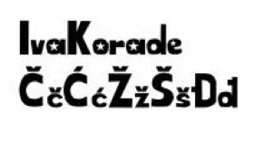
2. Vježba - Illustrator krivulje
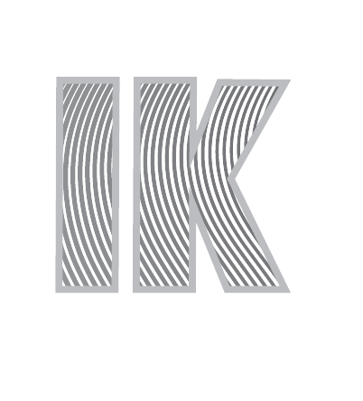
3. Vježba - Illustrator transformacije vektora
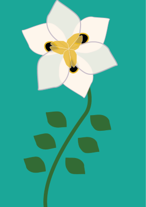
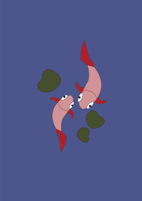
4. Vježba - Illustrator gradijenti
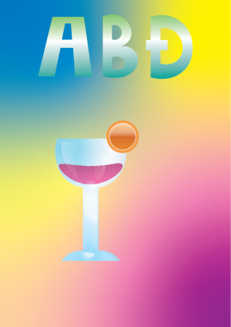
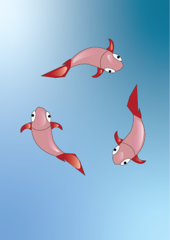
1. PROJEKTNI ZADATAK - VEKTORSKA GRAFIKA
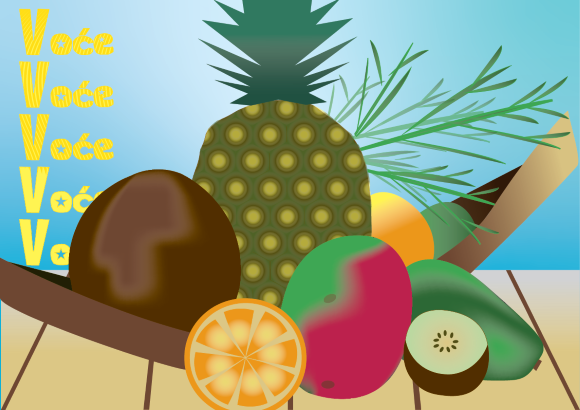
5. Vježba - Photoshop retuširanje
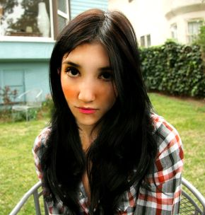
6. Vježba - Photoshop koloriranje
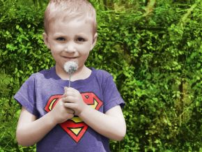
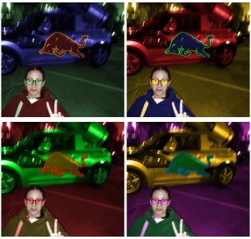
7. Vježba - Photoshop fotomontaža
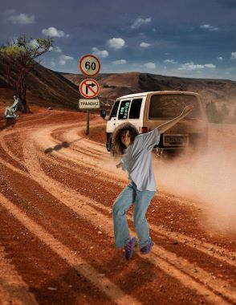
2. PROJEKTNI ZADATAK - PIKSEL GRAFIKA
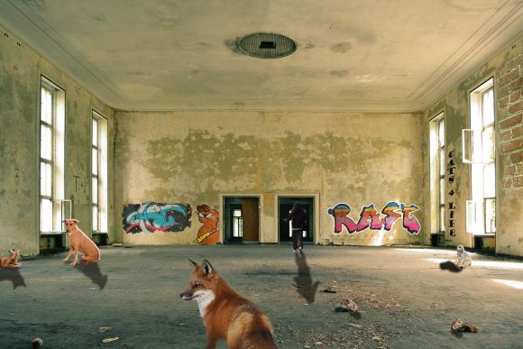
8. Vježba - Premiere cinemagraf


9. Vježba - Premiere obrada videozapisa
10.+11. Vježba - HTML
Posjeti moju stranicu za vježbe 10 i 11!!!